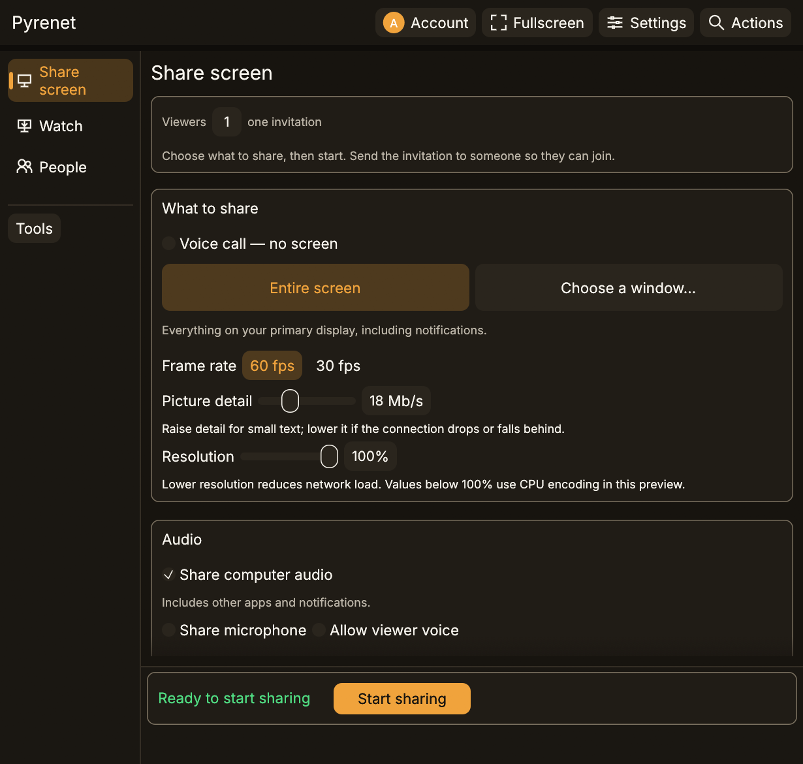

Pick the source
Whole screen or one window. Whole screen includes your notifications.
Windows sends. Windows or Android watches. Android does not send.
A real capture, 7 Sep 2026. Development UI. Not a pixel-perfect 0.3.2 Preview 5 match. Not a live session.

Whole screen or one window. Whole screen includes your notifications.
The watching device writes the invite. The sending PC imports it. Do not paste that string in a public issue.
Leave them off unless you want them. Hardware and OS permissions still apply.
Open the image if you need to read the controls.

0.3.2 Preview 5
This is the public zip, not a later git checkout. Release notes.
In the public Windows and Android builds. If a physical run is still missing, the same line says so.
| Capability | Status | What to expect |
|---|---|---|
| Screen and window capture | Available | Share an entire screen, or pick a single window, from a Windows x64 PC. |
| Video quality controls | Available | Choose 60 or 30 fps and adjust stream quality while a session is running. Those controls do not promise sustained 60 fps on every PC. |
| H.264 encoding | Available | NVIDIA NVENC is the validated path. Other PCs fall back to the built-in Windows CPU encoder, which costs processor time. Vendor hardware acceleration and physical Intel/AMD streaming tests are still pending. |
| Android receiving | Available | Android 8 or newer, decoding in hardware. Validated on one device in the public 0.3.2 Preview 5 run. |
| Windows receiving | Available | A second Windows PC can receive the screen and system audio. Both ends need matching builds. |
| Computer audio | Available | The sending PC’s audio travels with the screen. The receiver decoded computer audio in the LAN run with no reported underruns. Audible output on a phone was not independently confirmed. |
The control is in the UI. Nobody has signed off a physical test. That is Preview, not Available.
| Capability | Status | What to expect |
|---|---|---|
| Private session admission | Preview | The viewing device issues a private invitation that authorises the session over a pinned QUIC connection. Expiry, replay, and revocation pass loopback tests; physical regression testing is still open. |
| Two-way microphone voice | Preview | Builds and passes its checks. Physical round-trip and echo testing have not been done. |
| Remote control from Android | Preview | Builds and passes its checks. Physical input, and behaviour inside native games, are unproven. |
| Cursor appearance and effects | Preview | Desktop cursor styling with a local effects budget. The current build labels this preview only. |
| Several viewers on one share | Preview | One share can serve up to eight viewers from a single capture, each invited with its own pinned link and its own identity. The fan-out passes loopback tests; no two machines have exercised it. |
| Sharing a screen during a call | Preview | A call and a screen share can run together. On a call the Board is how you ask someone for their screen, because the Receive page still serves one session at a time. |
We do not sell you a cloud for this. Off-LAN viewing needs a route you already have. Contacts stay on the PC.
| Capability | Status | What to expect |
|---|---|---|
| Viewing outside your local network | Limited | Direct routes are tried first, with the FastCast relay as the fallback when both peers allocate one. Traversal across unrelated consumer networks has not been measured, so a route that already reaches your peer is still the dependable case. |
| Device-owned accounts and contacts | Limited | Held locally on Windows. Sync, recovery, and global handle claims are not implemented. |
Do not look for these in 0.3.2 Preview 5.
| Capability | Status | What to expect |
|---|---|---|
| Automatic update checks | Not yet | Present in some development builds, not in this download. Update by installing a newer matching Windows and Android pair over the old one. |
| Linux desktop | Not yet | Not in these public files. Application source has a Linux viewer (OpenH264, optional VA-API). Linux send is not a product. |
| macOS, iPhone, and iPad | Not yet | Not implemented. This preview download is Windows x64 and Android 8 or newer only. Android does not send. |
No group chat. No “community platform.” If you want Discord, use Discord. Bugs go here.
No subscription. Device-owned accounts.
{kind=link}